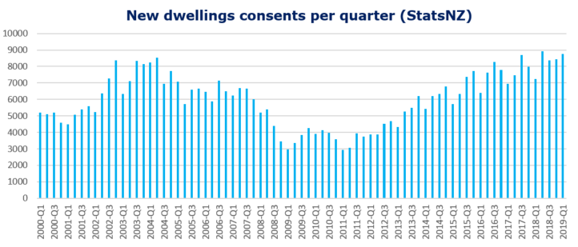

New Zealand construction: Few barriers, many opportunities

Tiffany Emmett
Construction Economist
Strong population growth and a thriving economy are driving a pipeline of construction projects across all market sectors in New Zealand. With increased government spending on key infrastructure, New Zealand is securing a high-ranking position on the world stage. However, concerns linger over shortages in the workforce to keep up with the pipeline of projects ahead.
New Zealand continues to impress with its strong economic indicators in a robust economy. The gross domestic product (GDP) annual growth was 2.3 percent in Q1 2019 with an unemployment rate sitting at a low 4.2 percent.
With a population of 4.9 million, New Zealand holds the number one ranking for ease of doing business, ease of obtaining credit and ease of registering a property by the World Bank.
Benefits of the New Zealand construction industry: an attractive place to live and work
These first place rankings, as well as a desire to succeed, make New Zealand an attractive place for people to live and work. Population growth is two percent per year, with 35 percent of this being overseas migrants, helping to add young, healthy and well-educated people to the workforce.
In the first quarter of 2019, the annual inflation rate dropped to 1.5 percent, from 1.9 percent in December 2018.
House prices have plateaued in Auckland and Christchurch over the past 12 months. Overall, a 2.9 percent national increase since March last year has driven the construction of dwellings around the country. There are also high levels of activity in the social, infrastructure, institutional and non-residential sectors.
Following the devastation of the 2011 earthquake, Christchurch experienced a wave of construction with the repair of existing buildings and the construction of new buildings, consuming a large portion of the construction workforce. This has also meant an increase in New Zealand’s construction companies.
As the bulk of this work is now completed, the government has shifted its focus to a pipeline of non-earthquake recovery work and is now focusing on master-planning the major cities to support sustainable growth.
Such projects include road, rail and transport upgrades, as well as significant investments into health, education and the growing tourism industry. However, concerns are being raised over the shortage of construction workers in the industry and whether these projects can make it to construction.
Infrastructure investment
In order to sustain New Zealand’s population growth, the government is investing large sums of money upgrading its infrastructure:
- Services and utilities – new construction and improvements to water reserves and wastewater/storm-water.
- Transport – new and enhanced bus and rail networks, airports and ports.
- Roads – new and upgraded road networks.
- Tourism – cultural and heritage facilities, airport and communications infrastructure.
The efficiency of New Zealand’s internal transport systems play a key role in the country’s economic growth and development, which is seeing some major projects get underway across the country.
Auckland becoming a world-class city
Further demonstrating Auckland’s economic growth and commitment to becoming a world class city, Auckland’s international and domestic airports are being upgraded by a NZ$1.8bn redevelopment project. Additionally, the NZ government and Auckland Council have ambitious plans for Auckland’s Transport Alignment Project (ATAP).
Altogether operational costs, asset renewals and new capital expenditure represents a significant investment of up to NZ$28 billion. The City Rail Link is the largest infrastructure project ever to be undertaken in New Zealand at a total project cost of NZ$4.4bn up to April 2019.
Should all of the proposed capital projects proceed including Light Rail busway networks and transport corridor upgrades, the total expenditure could reach NZ$17bn over the next ten years.
Non-residential construction in New Zealand
The New Zealand construction industry statistics show the total value of non-residential building work consented (approved) was $7.5bn for the year ending April 2019, up 11 percent compared to $6.7bn in April 2018.
Office space in Auckland central business district (CBD) is in short supply with vacancy rates of 5.2 percent according to research from Colliers International (2019). Tenants are seeking quality office space in a limited market, which is driving up prices. To take advantage of low vacancy rates some major projects are in the pipeline for Auckland CBD.
Commercial Bay Development (NZ$681m) will be New Zealand’s most expensive office tower and includes 39 levels of commercial office space and world class retail.
Auckland CBD alone will provide 42 percent of the 150,000m2 of office space under construction in 2019. It is likely that vacancy rates will remain low until 2020-2021 when this pipeline of projects is expected to be completed.
"Record low vacancy in a tight market is driving growth and creating a pipeline of new office developments in Auckland and refurbishments in Wellington.”
Wellington CBD also remains tight with prime office vacancy down to 1.2 percent and secondary vacancy at 7.6 percent according to Colliers International (2019). High levels of pre-commitment from tenants will assist in the construction of new developments and mostly the refurbishment of existing buildings in Wellington CBD, which should alleviate the short supply of office space for the interim.
Following Christchurch’s earthquake in 2011, the city saw a wave of construction activity to rebuild the city. A large supply of office and commercial space was added to the market in 2015, resulting in a jump in construction costs. This supply is still yet to be absorbed, which has slowed new development projects over the past year and is expected to remain relatively flat across 2020.
Spending on New Zealand's other non-residential includes construction of a new campus building for The University of Otago in Christchurch (NZ$150m) and Auckland’s Hospital redevelopment (NZ$350m). Further to this, plans are moving ahead for the Dunedin Hospital redevelopment, which is set to be the most modern hospital in New Zealand, adding 100,000m2 of build and costing NZ$1.4bn to complete.
Concerns for skilled New Zealand construction workers
Despite this strong pipeline of projects around the country, there are still concerns regarding the shortage of skilled construction workers driving up costs. Wage increases and supply chain bottlenecks could drive up construction costs by up to four percent over the next 12 months.
Sub-contractor cost increases add to the risk for managing contractors with some suffering significant losses. For example, Fletchers Building Limited recently suffered significant losses as a result of being in a fixed-price contract where sub-contract costs spiked.
Residential construction
With New Zealand’s population growing at around 100,000 people per year, an additional 40,000 dwellings will need to be constructed per annum to accommodate this growth.
The number of building consents for new dwellings has shown significant growth since 2011, as shown in the graph below from StatsNZ. By March 2019 consents reached 3,064 up 10 percent from March 2018. The start of 2019 saw building permit numbers reach a decade high of 3,292, close behind the record of 3,387 in June 2004.
The government’s Kiwibuild Scheme for first home owners is still driving construction of homes across the nation. Nevertheless, a 6.9 percent decline in March 2019 and plateauing house prices in Auckland and Christchurch may indicate that the cycle is reaching its peak.

Construction costs in New Zealand
New Zealand’s relatively small population means that the construction sector is occupied by relatively small contractors, with skills shortages a constant concern when the market is busy. Adding to this, some construction workers have left to work in Australia in the thriving New South Wales and Victoria markets. New Zealand's construction contractors may miss out on economies of scale in the construction supply chain that helps to keep costs down in other countries.
In our recent International Construction Market Survey, the average construction costs for six common building types in Christchurch and Auckland are relatively similar to those of Brisbane and Perth in Australia, but lower than Sydney and Melbourne. Construction costs increased by 3.5 percent over 2018 and are likely to increase again by four percent in 2019.